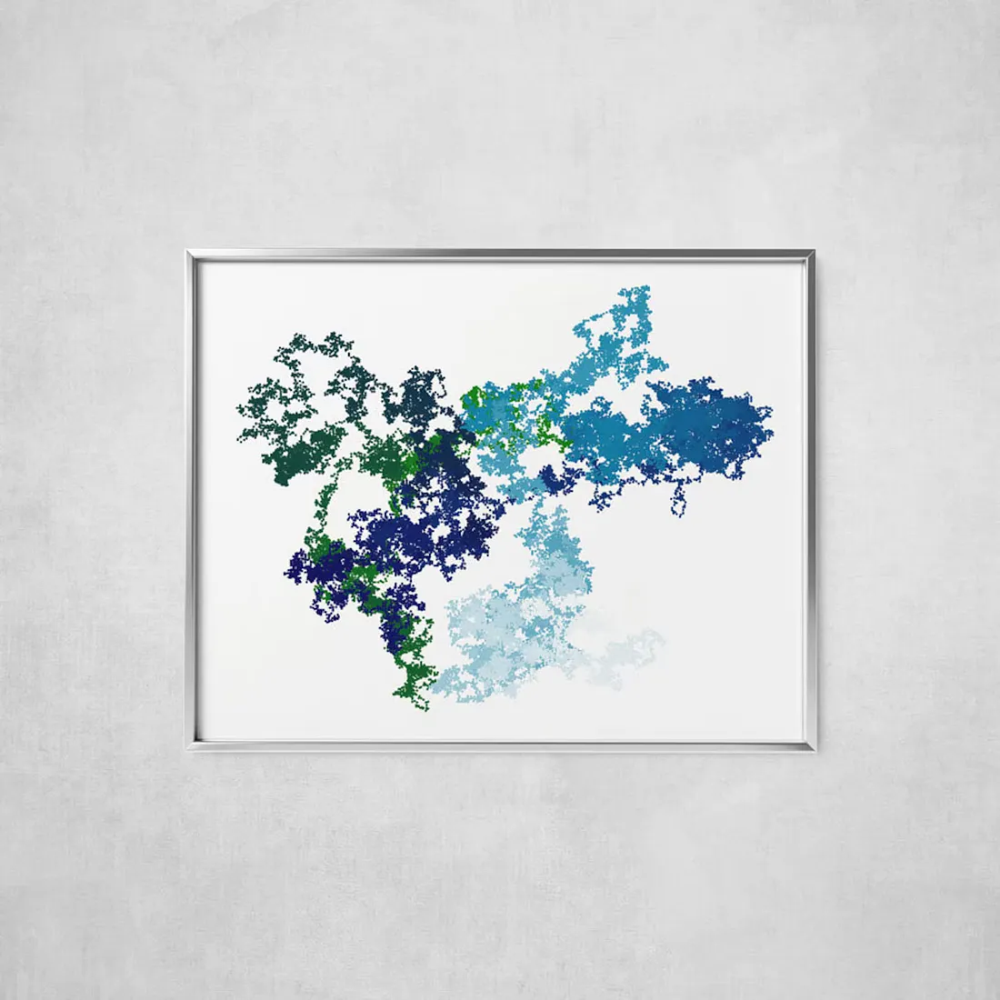
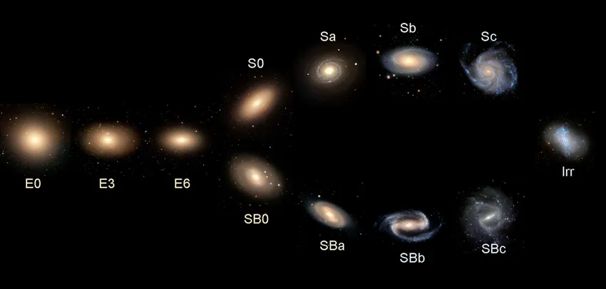

Jan 2, 2026
Sometimes reality feels overprocessed. Too sharp, too curated, as if it has passed through one filter too many. Dreams, on the othe...
There is something almost embarrassingly simple about board games. No spectacle, no cutting-edge technology, no grand...
There comes a point, not sudden, not theatrical, but gradual as erosion, when the noise of the world begins to lose its authority. I...
I first read The Metamorphosis a few years ago, and even now, there are still things that make me look at it differently every no...
People in the colony first noticed something strange about Mr. Prabhakar Rao on a Tuesday. Not because anything dramatic...
Human beings are fundamentally obsessed with positive definitions. When we encounter something new, our immediate...

We like to believe we live in a deterministic universe. We are taught from a young age that A implies B. You study hard, you g...
The elephant began trumpeting long before the nomad saw him.
When I was around seven or eight, there was a rat problem in our apartment building. The kind that lives in the damp, forgotten ga...
It was the pandemic. I was deep in the trenches of studying physics, math, and chemistry, spending my days trying to impos...

At large scales, the basic constituents of the universe are galaxies. There are ~10¹¹ in the observable universe. Galaxies...